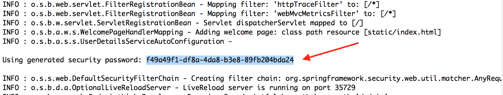

Purpose
In this lab you will gain experience with using Spring Security to secure the REST application through authentication and authorization.
Learning Outcomes
What you will learn:
-
How to implement authentication
-
How to restrict access to URLs and/or HTTP methods
-
How to test secured application
Specific subjects you will gain experience with:
- Spring Security and the
WebSecurityConfigurerAdapter
You will be using the 42-security-rest project.
Estimated time to complete: 45 minutes.
Use Case
- Implement authentication and authorization against REST application
Quick Instructions
If you are already knowledgeable with the lesson concepts, you may consider jumping right to the code, and execute the lab by following the embedded TODO comments (tasks). Instructions on how to view them are here.
If you aren’t sure, try the TODO instructions first and refer to the lab instructions by TODO number (below) if you need more help.
Instructions
The RestWsApplication you built in the previous lab is not secured.
You are going to secure it through authentication and authorization.
Explore default behaviour of Spring Boot Security
TODO-01 : Verify the presence of Spring security dependencies
When Spring Boot sees spring-boot-starter-security on the classpath, it
will set up default authentication and authorization - it will set up
a single user and all endpoints are secured.
The spring-security-test dependency provides testing support.
TODO-02a : Observe the default security behaviour of the Spring Boot application using a browser
Spring Boot application relies on Spring Security’s content-negotiation strategy to determine whether to use Basic authentication or Form-based authentication.
When you are using a browser, Spring Boot application will use Form-based authentication.
-
Using Chrome Incognito browser, access http://localhost:8080/accounts and observe that a login page gets displayed
-
Enter
userin theUsernamefield and Spring Boot generated password into thePasswordfield and verify that the accounts get displayed (If the browser keeps displaying the login page, make sure to use Chrome Incognito browser.)
Figure 1: Password output to stdout
-
Access http://localhost:8080/logout and click
Log outbutton
TODO-02b : Observe the default security behaviour of the Spring
Boot application using curl command
When you are sending a REST request using curl command, Spring Boot
application will use Basic authentication.
When you are sending a REST request without valid username/password
pair, the application will
respond with 401 Unauthorized.
- Open a terminal window
- Run "curl -i localhost:8080/accounts" and observe 401 Unauthorized response
- Run "curl -i -u user:<Spring-Boot-Generated-Password> localhost:8080/accounts" and observe a successful response
Enable Web Security
Spring Boot's default setup is deliberately minimal.
It is not intended for production.
Instead you should configure you own security rules using a
class that extends WebSecurityConfigurerAdapter class.
TODO-03 : Import security configuration class
The SecurityConfig class, which is located under config package,
needs to be explicitly imported since
it will not be found through component-scanning from the
accounts package.
Configure authentication and authorization
Since Web security is enabled, we are ready to configure authentication and authorization.
TODO-04 : Configure authorization
The most common form of authorization (access control) is through the usage of roles.
You are going define 3 roles - USER, ADMIN, and SUPERADMIN
with the following access control rules:
- Allow DELETE on the /accounts resource (or any sub-resource) for "SUPERADMIN" role only
- Allow POST or PUT on the /accounts resource (or any sub-resource) for "ADMIN" or "SUPERADMIN" role only
- Allow GET on the /accounts resource (or any sub-resource) for all roles - "USER", "ADMIN", "SUPERADMIN"
TODO-05 : Configure authentication
Here you are going to set up in-memory UserDetailsService and
define three users with corresponding set of roles assigned.
user/userwithUSERroleadmin/adminwithUSERandADMINrolessuperadmin/superadminwithUSER,ADMIN, andSUPERADMIN
TODO-06a : Perform security testing against MVC layer
Now You are going to test if the security configuration works
against MVC layer using @WebMvcTest and @WithMockUser
annotations.
The tests covers the following scenarios:
- Using an invalid user credential to perform any operation
should result in
401 Unauthorizedresponse - Using
USERrole, you can only perform read operation - Using
ADMINrole, you can perform create/update operation - Using
SUPERADMINrole, you can perform delete operation
Most tests already provided.
Make sure you understand what each test is meant to verify.
TODO-06b: Write a test that verifies that a user with USER role
is not permitted to perform create operation
This is an opportunity for you to write a simple security test code.
TODO-07a: Perform security testing against a running server
Now You are going to test if the security configuration works using end-to-end testing against the applcation running over the embedded server.
The tests cover the similar set of scenarios mentioned above.
TODO-07b: Write a test that verifies that user/user
is not permitted to create a new Account
Retrieve authorities (roles) for the logged-in user
Once authentication is successful, security context is being
maintained in the ThreadLocal during the processing of a request.
This allows any method in the call stack in the same thread of execution can access the security context even if the security context is not explicitly passed around as an argument to those methods.
Using a ThreadLocal in this way is quite safe if care is taken to clear the thread after the present principal’s request is processed. Of course, Spring Security takes care of this for you automatically so there is no need to worry about it.
You are going to access the security context via
SecurityContextHolder class.
TODO-08: Retrieve authorities (roles) for the logged-in user
Use SecurityContextHolder class to get Security context,
which in turn can be used to get Authentication object,
which is then used to get authorties.
An example code might look like following:
Collection<? extends GrantedAuthority> grantedAuthorities
= SecurityContextHolder.getContext()
.getAuthentication()
.getAuthorities();
Implement method security
TODO-09: Add method security annotation to a method
Here you are going to use method security so that the method will be invoked only when both of the following conditions are met:
- The logged-in user belongs to
ADMINrole - The value of the
usernamerequest parameter of the request URL matches the value of the principal's username.
This condition can be specified using SpEL (Spring Expression language).
An example could be either
@PreAuthorize("hasRole('ADMIN') && " +
"#username == principal.username")
or
@PreAuthorize("hasRole('ADMIN') && " +
"#username == authentication.name")
TODO-10: Enable global method security
The method security needs to be abled via
@EnableGlobalMethodSecurity annotation.
The prePostEnabled attribute needs to be
set to true in order to use @PreAuthorize
annotation.
An example code is as following:
@EnableGlobalMethodSecurity(prePostEnabled = true)
TODO-11: Test the method security using a browser or curl
Now let's see if the method security works against a running application.
-
Re-run this application
-
Use
user/usercredential to access the method, and verify the application returns403 Forbiddenresponse sinceuser/userdoes belong to neitherADMINnorSUPERADMINrole.curl -i -u user:user http://localhost:8080/authorities?username=user -
Use
admin/adminand verify that the roles are displayed successfullycurl -i -u admin:admin http://localhost:8080/authorities?username=admin -
Use
superadmin/superadminand verify that the roles are displayed successfullycurl -i -u superadmin:superadmin http://localhost:8080/authorities?username=superadmin
TODO-12a: Perform method security testing
The AccountServiceMethodSecurityTest class contains tests
that you are going to use for performing method security testing.
TODO-12b: Write a test that verifies that getting authorities
using http://localhost:8080/authorities?username=superadmin with
superadmin/superadmin credential should return
three roles ROLE_SUPERADMIN, ROLE_ADMIN, and
ROLE_USER.
This is an opportunity for you to write a test code.
Create custom UserDetailsService (Optional)
Do the remaining steps only if you have extra time.
TODO-13: Create custom UserDetailsService
Note that it needs to implement loadUserByUsername method
of the UserDetailsService interface.
The custom UserDetailsService maintains UserDetails
of two users:
mary/marywithUSERrole andjoe/joewithUSERandADMINrole
Typically you would use some kind of persistence
storage for maintaining user data but in this lab, for the sake
of simplicity, you are going to just return
hard-coded UserDetails object given a username.
TODO-14: Add authentication based upon the custom UserDetailsService
Now you are going to add authentication based upon the
custom UserDetailsService using AuthenticationManagerBuilder
object.
auth.userDetailsService(new CustomUserDetailsService(passwordEncoder));
So now there are 5 users configured - user/user, admin/admin,
superadmin/superadmin, mary/mary, and joe/joe.
TODO-15: Verify that the newly added custom UserDetailsService
works
Since the custom UserDetailsService maintains
UserDetails on two users,
mary/mary and joe/joe, you can now verify that
you can access a secured resource using the identity of
one of these two users.
curl -i -u mary:mary http://localhost:8080/accounts/0
curl -i -u joe:joe http://localhost:8080/accounts/0
TODO-16: Perform security testing for the two users added
through custom UserDetailsService
Create custom AuthenticationProvider (Optional)
TODO-17: Create custom AuthenticationProvider
Note that it needs to implement AuthenticationProvider interface.
Typically you will use a custom authentcation system for the verification of the passed identity.
In this lab, we are just faking it so that it handles a user with the following identity.
spring/springwithROLE_ADMINrole
TODO-18: Add authentication based upon the custom AuthenticationProvider
Now you are going to add authentication based upon the
custom AuthenticationProvider using AuthenticationManagerBuilder
object.
auth.authenticationProvider(new CustomAuthenticationProvider());
So now there are 6 users configured - user/user, admin/admin,
superadmin/superadmin, mary/mary, joe/joe, and spring/spring.
TODO-19: Verify that the newly added custom AuthenticationProvider works
Since the custom AuthenticationProvider can validate
the identity of
spring/spring, you can now verify that
you can access a secured resource using it.
curl -i -u spring:spring http://localhost:8080/accounts/0
TODO-20: Perform security testing for the user added
through custom AuthenticationProvider
Summary
In this lab, we secured Spring REST application with authentication and auhtorization.
We also secured a service-layer method using method security.
Finally we configured custom UserDetailsService and
AuthenticationProvider.
Congratulations, you are done with the lab!